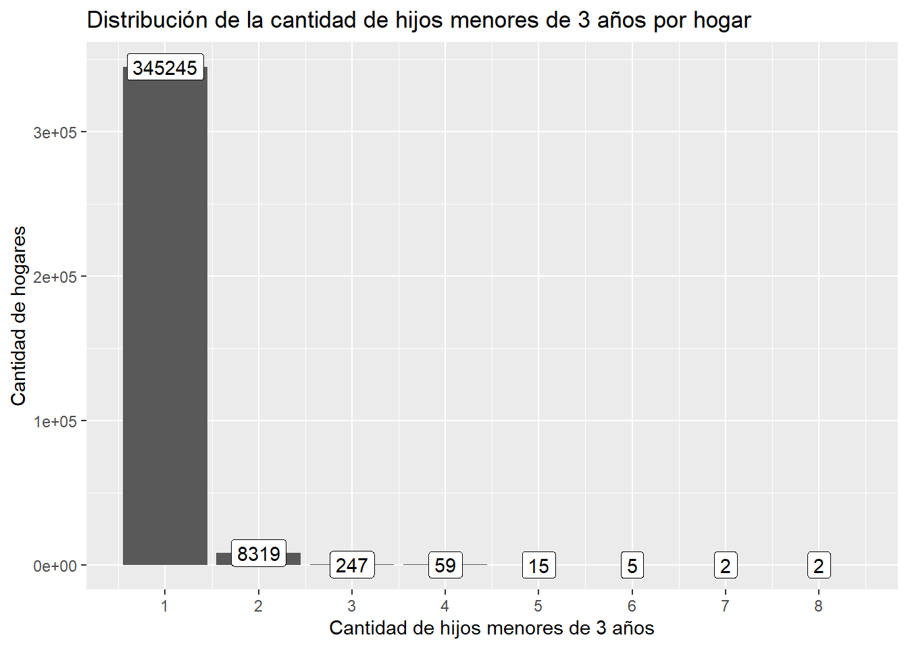

── Attaching core tidyverse packages ──────────────────────── tidyverse 2.0.0 ──
✔ dplyr 1.1.2 ✔ readr 2.1.4
✔ forcats 1.0.0 ✔ stringr 1.5.1
✔ ggplot2 3.5.1 ✔ tibble 3.2.1
✔ lubridate 1.9.2 ✔ tidyr 1.3.0
✔ purrr 1.0.2
── Conflicts ────────────────────────────────────────── tidyverse_conflicts() ──
✖ dplyr::filter() masks stats::filter()
✖ dplyr::lag() masks stats::lag()
ℹ Use the conflicted package (<http://conflicted.r-lib.org/>) to force all conflicts to become errors
library(haven)library(sf)
Linking to GEOS 3.11.2, GDAL 3.8.2, PROJ 9.3.1; sf_use_s2() is TRUE
library(spdep)
Loading required package: spData
The legacy packages maptools, rgdal, and rgeos, underpinning the sp package,
which was just loaded, will retire in October 2023.
Please refer to R-spatial evolution reports for details, especially
https://r-spatial.org/r/2023/05/15/evolution4.html.
It may be desirable to make the sf package available;
package maintainers should consider adding sf to Suggests:.
The sp package is now running under evolution status 2
(status 2 uses the sf package in place of rgdal)
To access larger datasets in this package, install the spDataLarge
package with: `install.packages('spDataLarge',
repos='https://nowosad.github.io/drat/', type='source')`
Distribución de la cantidad de hijos menores de 3 años por hogar
frec_plot <- censo_hogar %>%ggplot(aes(n_hijos))+geom_bar()+labs(title ="Distribución de la cantidad de hijos menores de 3 años por hogar",x ="Cantidad de hijos menores de 3 años",y ="Cantidad de hogares")# añadir formato a la geom_label number_format con scales::number_formatfrec_plot <- frec_plot +geom_label(aes(label =after_stat(count)),stat ="count",label.padding =unit(0.25, "lines"))# Corrije el scale_x para que se muestren losnumeros enteros en todo el rango de n_hijosfrec_plot <- frec_plot +scale_x_continuous(breaks =seq(0,max(censo_hogar$n_hijos),1))frec_plot

# Hacer promedio por las variables hasta zona para contar el nuemro promedio de hijos que tienen los hogares de una misma zona censalcenso_hogar <- censo_hogar %>%group_by(I01,I02,I03,I04) %>%summarise(n_hijos =mean(n_hijos))
`summarise()` has grouped output by 'I01', 'I02', 'I03'. You can override using
the `.groups` argument.
# El grafico de la distribucion de la media de hijos:frec_plot <- censo_hogar %>%ggplot(aes(n_hijos))+geom_histogram()+labs(title ="Distribución de la cantidad promedio de hijos menores de 3 años por hogar",x ="Cantidad promedio de hijos menores de 3 años",y ="Cantidad de hogares")
Vamos a crear la variable zon que es el concatenado de las variables de agrupación de zona censal
Mostremos la matriz de pesos con lattices de los primeros 50 elementos
levelplot(t(matriz[50:100,50:100]),scales =list(y =list(at =seq(10, nrow(matriz), by =10),labels =seq(10, nrow(matriz), by =10))),main ="Matriz de Pesos Espaciales Basada en Contigüidad")